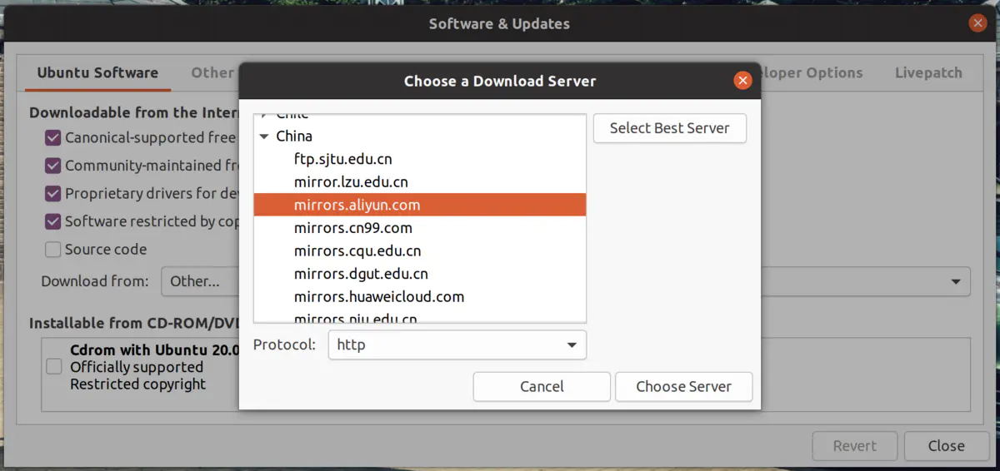
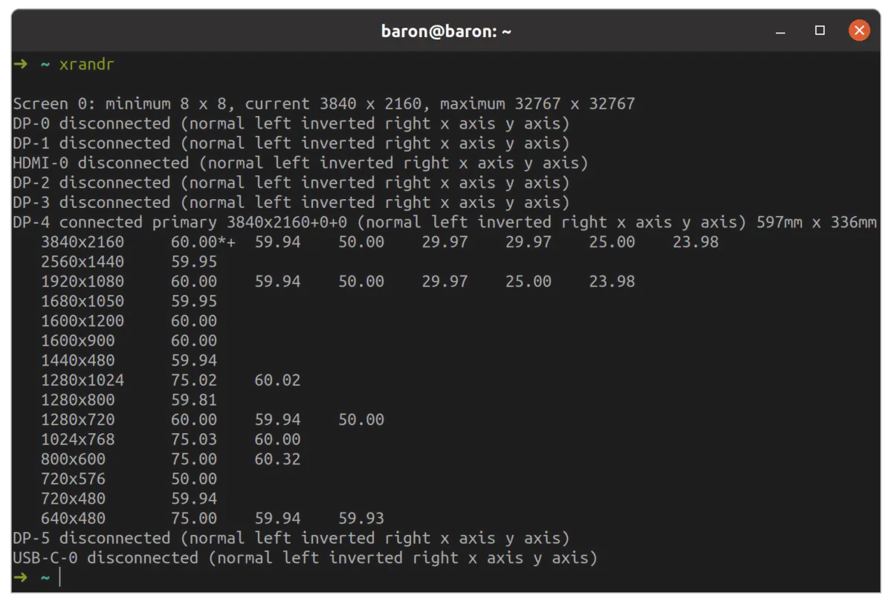
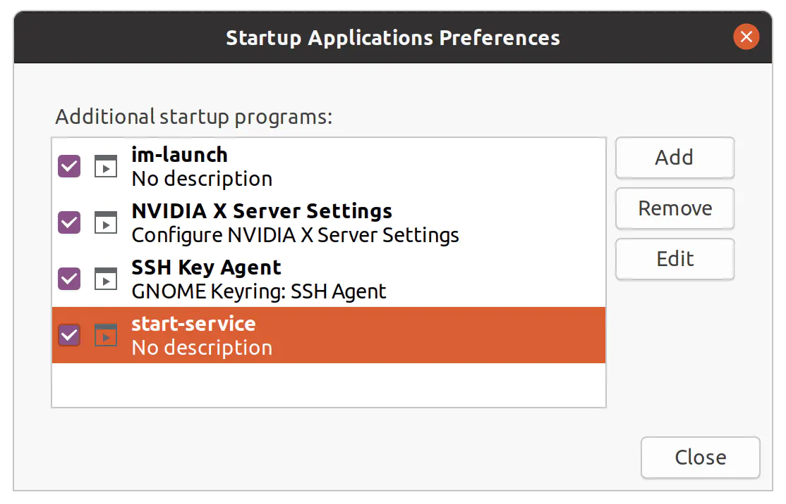
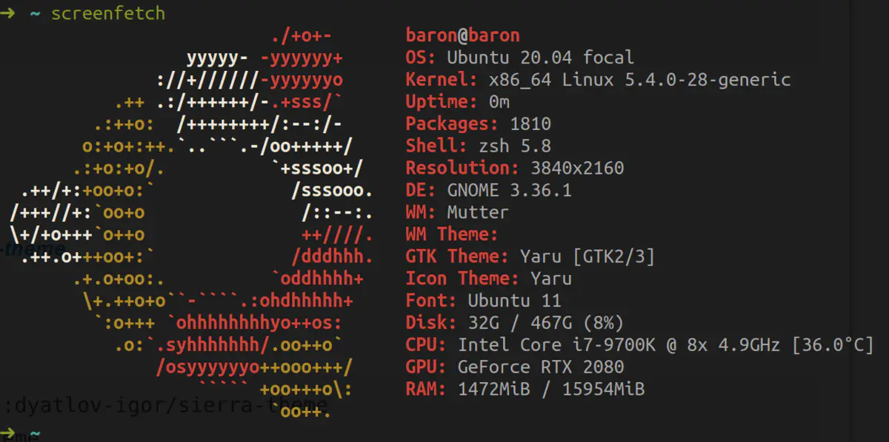
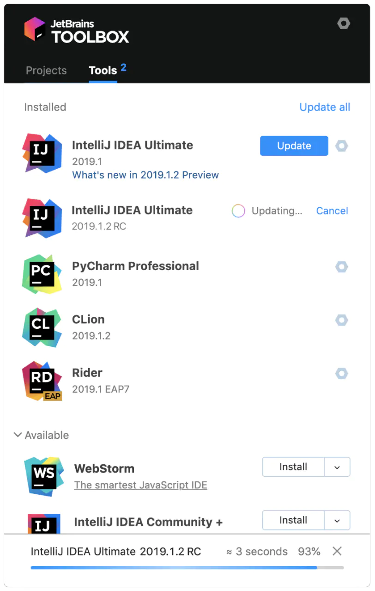
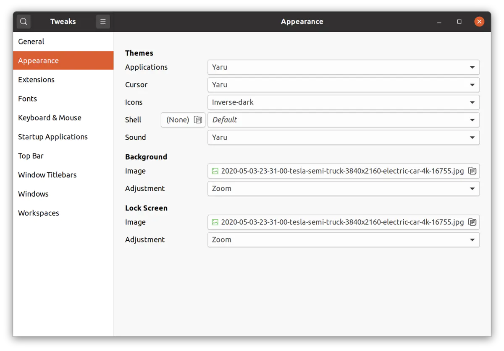
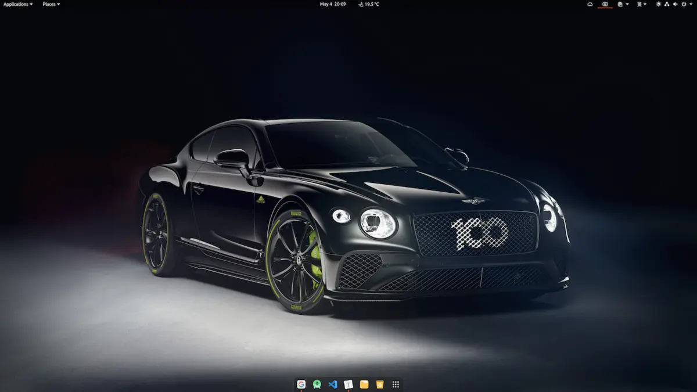

Zotero 使用方法
在官方网站中，有一篇文章专门替用户剖析了 为什么要使用 Zotero。以下是我把其当做自己主力文献管理的几个主要原因：
- 软件本身完全免费并且开源，不存在盗版问题
- 注册后本身只包括 300M 空间同步，但支持 WebDAV 同步，例如 Dropbox 和坚果云等
- 官方的反馈论坛比较活跃，有问题可以快速得到反馈
- 从网站和期刊文章等提取保存出版物数据检索
- 拖入 PDF 的出版物数据准确率高
- 可以和 Word，LibreOffice 集成，方便文献进一步的使用管理
- 强大的第三方插件系统
- 每个条目下可以添加任意数量和格式的附件
当然，使用一个工具首先要了解其上限和下限，Zotero 同样有着比较明显的短板：
- 因为强大所以上手时略显复杂
- 并不是一个完全基于 Web 的工具
- 没有内置的 PDF 阅读工具
- 没有适配于 iOS 和 Android 的官方应用程序
Zotero 的使用和学习路径
最权威和最新的学习资料一定是 官方文档。目前有针对 Zotero 4 旧版本的 中文说明，如果英文吃力也可以参考。接下来我将按照下图的顺序介绍 Zotero 的使用和学习路径。
 使用和学习路径
使用和学习路径
添加内容到文献库
使用浏览器插件
不同于一些工具，Zotero 的 浏览器插件 称得上可以「保存一切」。当所在的网页呈现出不同的内容时，Zotero 的插件会呈现出不同的图标。例如，如果打开的是 PDF，那么图标就会变成 PDF。
如果一个网页内有多个文献元数据，可以检测到并同时保存多篇文章。即便是一篇博客，也可以直接保存。
 针对博客的保存效果
针对博客的保存效果
下图为直接保存博客网页后的效果，可以看到它也会抓取部分内容作为摘要进行显示。
 博客保存详情
博客保存详情
如果你好奇 Zotero 支持导入的内容包括什么，可以参考下面这个截图。
 支持保存内容
支持保存内容
使用各种标识符在应用内添加
对于添加文献或者书籍，如果我们知道了它对应的 ISBN，DOI 或 PubMed ID，就可以快速将项目通过标识符添加到库中。
 利用标识符添加
利用标识符添加
单击 Zotero 窗格中间列顶部的「按标识符添加项目」按钮，输入标识符后按 Enter。如果要一次输入多个标识符，在输入第一个标识符后按 Shift + Enter会进入多行模式，随后输入其余标识符（每行一个），并通过 Enter 换行。输入完成符后，再按 Shift + Enter 即可一次导入所有项目。
 一次输入多个标识符
一次输入多个标识符
本地 PDF 文件和各种附件直接拖入应用
如果你有已经下载好的 PDF 版本文献，只要直接拖入到应用中即可，Zotero 会自动识别 PDF 文档中的元数据。
和大多数文献管理软件相比，Zotero 有一个非常大的优势就是支持将任意格式的附件添加到某个条目中，例如这里的附件可以是 Excel 格式的电子表格，可以是文献中提到的某一个网页地址，也可以是你自己和文献主题相关的电子实验记录，甚至你还可以将文章中提到的相关代码打包为压缩文件后进行添加。
结合 WebDAV 的同步功能，我们还可以将这些相关资料在多个设备间进行同步，这样就极大的方便了我们对文献相关的各种资料进行整理。
从其它工具导入
Zotero 支持从多种工具的数据导入，且支持的导入格式非常丰富。例如 Mendeley 的数据库，Endnote 的 XML 格式，以及常见的 RDF 和 RIS 格式等等。更多格式见下图截图。
 数据库支持格式
数据库支持格式
通过 feed 进行订阅
如果你是一个喜欢追文献的人，肯定有各种各样自己的方法，例如通过邮件订阅或者 RSS 等，而 Zotero 本身也为我们提供了一种非常方便的方法。
 新建订阅
新建订阅
点击 URL 后可以将一些杂志主页提供的 URL 地址直接添加到这里，并且进行更多高级设置，比如更新订阅时间和删除时间等等。
 高级设置选项
高级设置选项
文献和笔记管理
集合与标签
集合可以理解为支持多个层级的文件夹，如下图在一个合集中新建一个子集。
 新建分类
新建分类
除了按照目录分类以外，可以为每个文献添加若干个标签。这里建议标签的使用维度不和集合重合。例如，我有个一个叫做「lncRNA」的目录集合，就不应该再建立一个「lncRNA」的标签，这时的标签可以考虑应用维度或者重要性维度。如使用 P1、P2 和 P3 标注文献的重要性，使用「中期」「答辩」等标注一个文献的用途。
每个标签可以设置对应颜色，这个色块也会自动显示在每一个条目的开头，方便查看，一目了然。

搜索
在 Zotero 中，快速搜索支持如下图所示的三种粒度。需要说明的是，如果 PDF 文档已经建立过，通过「所有内容」进行搜索时是可以搜索到文档文本的。
 三种搜索粒度
三种搜索粒度
除了快速搜索以外，Zotero 中还有一种高级搜索方法。高级搜索提供比快速搜索更多更精细的筛选条件，并允许保存搜索内容方便下次使用。
运行高级搜索需要打开「高级搜索」窗口，单击中心窗格顶部的放大镜图标，然后就会进入高级搜索界面，搜索支持逻辑判断且可搜索的条目也非常之多。
 高级搜索
高级搜索
排序和关联
每个集合都支持显示若干需要的内容并且按照某种方式进行排序，且支持二次排序。
 指定二次排序
指定二次排序
另外，不同的文献之间、文献和笔记之间都可以进行关联。我们可以方便地将关联性强的内容结合到一起。
笔记
每一篇文献支持插入多个笔记。笔记支持的格式内容也非常丰富，例如引用和插入链接以及添加不同层级的标题都没有问题，而且笔记还可以和多篇文献进行关联。

默认笔记本事是富文本编辑器，不支持 markdown 语法。但因为 Zotero 的插件和 Firefox 的插件格式相同，我们只需要把 Firefox 的 markdown here 插件稍加修改打包就可以导入 Zotero 中，从而使笔记支持 markdown。我已经将插件打包好，你可以 点击链接下载安装。
 markdown 效果
markdown 效果
生成引文和报告
无论使用 Endnote 还是使用 Mendeley 抑或使用 Zotero，一个非常重要的需求就是在平时写各种论文的过程中插入参考文献。Zotero 可以从哪些方便满足你的需求呢？
 引用设置页面
引用设置页面
快速复制
如果你只希望在自己的博客或者笔记中插入一些文章而无需遵守严格的引用要求。那么 Zotero 本身提供了非常方便的快速复制方法。
在设置中可以设置复制时需要的引文格式，然后只需要拖拽即可，非常自由。
 单篇拖拽引用效果
单篇拖拽引用效果
多篇文献右键多种导出
当你同时选择多篇文献时，也可以通过鼠标右键选择你需要导出的形式。例如 RTF 或者 HTML，当然，你也可以选择直接复制然后一步粘贴到位。
 多篇拖拽引用效果
多篇拖拽引用效果
在 Microsoft Word 中使用插件
通常安装软件的时候就会提示自动安装 Word 插件，如果因为各种原因前期没有安装，可以在设置的引用中进行安装，安装后重启 Word 即可。
安装好之后 Word 中就会出现如下 Zotero 插件：
 word插件
word插件
Word 中的 Zotero 选项卡包含以下内容：
 Zetero 选项卡
Zetero 选项卡
在正式插入引文之间，需要设置引文的格式和语言，通过管理样式可以轻松找到海量的引文格式。如果需要显示中文，则可以在语言选项中选择中文。
 引用格式设置
引用格式设置
在需要添加引文的位置点击添加选项
 调出引用搜索
调出引用搜索
在出现的搜索框中可以使用各种方式来快速搜索自己需要插入的文献，例如作者姓名。
 使用作者姓名搜索
使用作者姓名搜索
如果需要在一个位置内引用多篇文献，可以一次选择自己多篇想添加的内容统一添加。
 多篇插入
多篇插入
所有文献都引用好之后，直接点击书目即可插入引文。

生成报告
除了插入参考引文之外，Zotero 还给出了另一种导出参考文献的方式——生成报告。
报告是简单的 HTML 页面，概述了所选项目的项目元数据，注释和附件。可以打印它们，也可以将它们发布到网上并通过电子邮件发送。
创建报告可以右键单击中心窗格中的项目或选项，然后选择「由所选条目生成报告…」，也可以右键单击左列中的集合，然后选择「从集合生成报告」。

第三方工具插件 可以帮助你更好地过滤报告内容，例如对报告进行排序或者增删条目等。
 导出效果
导出效果
备份和协作
同步
Zotero 本身支持 300M 免费的存储空间。这对很多人都是不够的，如果你不想购买官方的存储空间可以使用 WebDAV 服务。这里就不做展开介绍了，以国内使用比较方便的「坚果云」为例，官方给了一个比较详细的配置方法教程：如何在 Zotero 中设置 webdav 连接到坚果云。
协作
协作功能可能是很多人都忽略掉或者不知道的一个功能。Zotero 提供了相对完善的协作方式，这里做一些介绍。
如果你想和实验室或者几个好用共享协作一个文献库，那么就可以创建一个私有库，需要去官网创建，方式如下。
 官网创建小组
官网创建小组
随后还有一些具体的权限需要设置，例如什么人可以读，什么人可以编辑。
 设置权限
设置权限
创建好之后，如果你的客户端已经登陆并且完成同步，将会在侧边栏出现一个新的群组。如下图所示。

另外，在网页版的管理界面中可以进行成员邀请和删除。
其它内容
插件推荐
插件系统是 Zotero 作为开源软件的独特优势，你可以通过 官方插件网站 进行查看。我目前在用的几款插件如下图所示，推荐安装使用。
 我的在用插件
我的在用插件
小技巧
- 当选择了一个项目时，可以通过按住 Option(Ctrl) 键突出显示包含此项目的所有集合，也就是知道这篇文献所在的分组
- 在集合列表或项目列表中的键盘上按 +（加号）可以展开所有节点，按 -（减号）则可以折叠
- 要查看所选库或集合中的项目数可以单击然后使用 Command-A(Ctrl-A) 全选，计数将显示在右侧
- 若使用快速复制功能，在将项目拖放到文本文档时按住 Shift 键能实现插入引文而不是完整引用
- 可以单击详细信息中的 DOI 和 URL 字段标签直接打开链接
写给工程师的 Ubuntu 20.04 最佳配置指南
最近 Ubuntu 发布了 20.04 LTS 版本，我也在第一时间安装体验。由于各种 Linux 发行版本并不像 MacOS、Windows 一样开箱即用，因此需要做很多配置。每次配置都需要查阅各种资料，虽然网络上有很多配置文章，但基本上都会存在一些问题：
- 只教怎么做，不说为什么；
- 文档陈旧，不更新；
- 内容缺失，不丰富；......
因此我希望整理一份最佳配置指南，除了记录需要做什么，还会说明背后的原理和技术背景。一方面方便自己今后查阅，另一方面也想将这份指南分享给大家，并和大家一起逐步完善它。所以，这是一份会持续更新的、有实操有原理、内容丰富的最佳配置指南。
关注公众号 BaronTalk，回复 Ubuntu 即可下载最新的 PDF 版本配置文档。
一. 系统配置
1. 关闭 sudo 密码
为了避免每次使用 sudo 命令时都输入密码，我们可以将密码关闭。操作方法：
第一步：终端输入命令sudo visudo，打开 visudo；
第二步：找到 %sudo ALL=(ALL:ALL) ALL 这一行修改为%sudo ALL=(ALL:ALL) NOPASSWD:ALL
2. 修改软件源
Ubuntu 默认的软件源是境外的，速度上会有些问题，我们可以在「Software & Updates」(软件和更新)中选择国内的镜像。

3. 更新系统
# 更新本地报数据库
sudo apt update
# 更新所有已安装的包（也可以使用 full-upgrade）
sudo apt upgrade
# 自动移除不需要的包
sudo apt autoremove
这里补充几个常用的清理命令：
| 命令 | 描述 |
|---|---|
| apt autoclean | 将已删除软件包的.deb安装文件从硬盘中删除 |
| apt clean | 同上，但会把已安装的软件包的安装包也删除掉 |
| apt autoremove | 删除为了满足其他软件包的依赖而安装，但现在不再需要的软件包 |
| apt remove [软件包名] | 删除已安装的软件包（保留配置文件） |
| apt --purge remove [软件包名] | 删除已安装包（不保留配置文件） |
4. 高分屏适配
默认情况高分屏下 UI 元素显得过小，因此需要调整界面的缩放比例。Ubuntu20.04 默认是 GNOME 桌面，GNOME 可以在 Settings>Displays（设置>显示）中开启 HiDPI 支持，以整数倍来调整屏幕比例。也可以通过如下命令的来设置：
# scaling-factor 仅能设置为整数 1=100%，2=200% 3=300% ......
gsettings set org.gnome.desktop.interface scaling-factor 2
整数倍的缩放设置，在部分设备上 UI 元素要么显得过大，要么显得过小，因此我们需要进一步调整。
使用下面的命令查看你 Linux 设备上的 Window System（图形接口协议），通常是 Wayland/X11
echo $XDG_SESSION_TYPE
Wayland
如果是 wayland，使用下面的命令启动实验性的非整数倍缩放功能。
gsettings set org.gnome.mutter experimental-features "['scale-monitor-framebuffer']"
之后再次打开 Settings>Displays，就可以选择非整数倍缩放（125%、150%、175%）。Ubuntu20.04 已经在 Settings>Displays 中提供了图形化的界面来开启实验性的非整数倍的缩放功能，因此无需通过上面的命令来开启。
我试验下来，这种方式无法在我的设备上正常设置非整数倍缩放。我判断是因为 Ubuntu20.04 默认的 Window System 是 X11 而不是 Wayland，如果你的设备上是 Wayland，应该是可以正常设置的。或者你在登陆桌面系统时选择 Ubuntu On Wayland 理论上也是可以的。
X11
对于 X11，我们可以同时使用 scaling-factor 和 xrandr 来实现非整数倍缩放，这可以使 TTF 字体被正确缩放，防止单独使用 xrandr 时出现的模糊现象。你可以使用 gsettings 或者在 Settings>Displays 中来指定放大系数，并用 xrandr 指定缩小系数。
首先将界面缩放系数设置为「UI看起来太大」的最小系数，通常是 2（200%），如果不够大就继续尝试 3 甚至更大的系数。然后使用 xrandr 来设置缩小系数，我自己设置的是 1.25，如果 UI 看起来太大就提高系数，反之就降低系数。命令如下：
xrandr --output DP-4 --scale 1.25x1.25
使用上述命令你可能会遇到 warning: output DP-4 not founnd; gnoring的提示，或者执行命令后界面无任何变化。此时你需要执行 xrandr 命令来查看你的 output 参数（也就是当前显示接口的名称，日志中显示 connected 的就是），比如我设备上的是 DP-4。

正确执行完命令后可能会出现 UI 元素过小的情况，回去 Settings>Displays 中看看，是不是整数倍缩放被还原成了 100%，如果是重新选择合适的缩放比例即可（比如 200%）。
重启后 xrandr 的设置会失效，我们可以设置个启动自动执行的脚本，比如 start-service.sh ：
# start-service.sh
#!/bin/bash
xrandr --output DP-4 --scale 1.25x1.25
exit 0
接着给 start-service.sh 授予执行权限
sudo chmod +x start-service.sh
然后在 Ubuntu 中搜索「sartup Applications」(启动应用程序) ，将脚本添加进去：

至此就能完美的支持 4K 屏显示了。
5. 安装 Python2
Ubuntu20.04 自带了 python3，但是某些第三方工具或者脚本还是用的 python2，因此我们需要自行安装
apt install python
6. 安装 Git
apt install git
7. 中文输入法
由于搜狗输入法目前还不支持Ubuntu20.04，加之其对高分屏支持不太友好，因此不再折腾选择了 ibus-libpinyin。
# 安装
sudo apt install ibus-libpinyin
sudo apt install ibus-clutter
接着在应用程序中找到「Language Support」(语言支持)，更改「Keyboard input method system」(键盘输入法系统)为「IBUS」。重启系统，然后在Settings>Region & Language>Input Sources（设置>区域与语言>输入源）中新增「Chinese(Intelligent Pinyin)」(中文(智能拼音))就可以使用中文输入法了。
二. 打造你的命令行工具(Terminator && ZSH)
1. 安装 Terminnator
如果你用惯了 Mac 平台下的 iTerm2，一定会对它的分屏功能恋恋不忘，然而 Ubuntu 自带的 Terminal 并不好用。好在 Linux 下有各种开源 Terminal，个人比较推荐 Terminator，强大如 iTerm2，一样支持分屏。
# 安装
sudo add-apt-repository ppa:gnome-terminator
sudo apt update
sudo apt install terminator
Terminator 默认的界面比较丑，不过配置灵活，大家可以根据喜好自行调整。
2. 配置 Shell（安装 zsh 和 oh-my-zsh）
搞定了 Terminal，接下来配置 Shell。执行下面的命令：
cat /etc/shells
可以看到 Ubuntu 已经内置了各种 Shell：
/bin/bash
/bin/csh
/bin/dash
/bin/ksh
/bin/sh
/bin/tcsh
市面上常用的 Linux 发行版本通常默认使用的 Shell 都是 bash，但 zsh 要远比 bash 强大的多。
# 安装 zsh
apt install zsh
# 将 zsh 设置为系统默认 shell
sudo chsh -s /bin/zsh
不过 zsh 的配置太复杂，好在有人开发了 oh-my-zsh，可以让我们更方便的配置 zsh。
# 自动安装，如果你没安装 git 需要先安装 git
wget https://github.com/robbyrussell/oh-my-zsh/raw/master/tools/install.sh -O - | sh
# 或者也可以选择手动安装
git clone git://github.com/robbyrussell/oh-my-zsh.git ~/.oh-my-zsh
cp ~/.oh-my-zsh/templates/zshrc.zsh-template ~/.zshrc
重启 Terminal 你就能发现变化。
3. ZSH 配置
zsh 的配置主要集中在 ~/.zshrc 文件里，比如我们可以给常用命令配置别名：
alias cls='clear'
alias ll='ls -l'
alias la='ls -a'
alias vi='vim'
alias grep="grep --color=auto"
或者选择 zsh 的主题
ZSH_THEME="robbyrussell"
oh-my-zsh 内置了很多主题，对应的主题文件存放在 ~/.oh-my-zsh/themes 目录下，你可以根据自己的喜好选择或者编辑主题。
4. ZSH 插件安装
oh-my-zsh 还支持各种插件，存放在 ~/.oh-my-zsh/plugins 目录下。这里推荐几款：
autojump：快速切换目录插件
# 安装
apt install autojump
# 使用
j Document/
zsh-autosuggestions：命令行命令键入时的历史命令建议插件
# 安装
git clone https://github.com/zsh-users/zsh-autosuggestions ${ZSH_CUSTOM:-~/.oh-my-zsh/custom}/plugins/zsh-autosuggestions
zsh-syntax-highlighting：命令行语法高亮插件
# 安装
git clone https://github.com/zsh-users/zsh-syntax-highlighting.git ${ZSH_CUSTOM:-~/.oh-my-zsh/custom}/plugins/zsh-syntax-highlighting
插件安装好后需要在 ~/.zshrc 文件里配置后方可使用，配置如下：
# 打开 ~/.zshrc 文件，找到如下这行配置代码，在后面追加插件名
plugins=(其他插件名 autojump zsh-autosuggestions zsh-syntax-highlighting)
5. 有趣的命令行小玩具
配置好Terminator 和 ZSH 后，我们还可以为命令行添加些有趣的小玩具。
CMatrix(https://github.com/abishekvashok/cmatrix)
终端黑客帝国屏保
# 安装
sudo apt install cmatrix
# 运行（加上 -lba 参数看起来更像电影，加上 -ol 参数起来更像 Win/Mac 的屏保）
cmatrix
效果图：
.gif)
Steam Locomotive(https://github.com/mtoyoda/sl)
终端小火车动效
# 安装
sudo apt install sl
# 运行
sl
效果图：
.gif)
Screenfetch(https://github.com/KittyKatt/screenFetch)
The Bash Screenshot Information Tool，用于在终端显示系统信息及 ASCII 化的 Linux 发行版图标
# 安装
sudo apt install screenfetch
# 运行
screenfetch
效果图：

三. 软件安装
1. 安装Clash(搭个tizi，你懂的)
第一步：到 https://github.com/Dreamacro/clash/releases 下载最新的 Linux 版 Clash，例如：clash-linux-amd64-v0.19.0.gz。解压后得到一个可执行文件 clash-linux-amd64-v0.19.0：
tar -zxvf clash-linux-amd64-v0.19.0.gz
第二步：使用 mv 命令移动到 /usr/local/bin/clash：
sudo mv clash-linux-amd64-v0.19.0 /usr/local/bin/clash
第三步：终端输入 sudo chmod +x /usr/local/bin/clash 添加执行权限；
sudo chmod +x /usr/local/bin/clash
第四步：终端执行 clash 命令，运行 clash；
# 运行 clash
clash
此时会在 /home/{用户ID}/.config/clash 目录下生成两个文件：config.yaml 和 Country.mmdb；编辑 config.yaml 文件，配置代理服务器信息和规则，部分商家会提供yaml文件，下载后 copy 过来即可；
重启 clash（关闭并重新打开终端，执行 clash 命令）以加载更新后的配置文件；
保持 clash 运行，打开浏览器访问 clash.razord.top 进行策略配置、选择代理线路等等（可能需要根据提示输入IP、端口和口令，具体内容可在 config.yaml 中查看；
继续保持 clash 运行，在系统网络设置中设置手动代理 Settings>Network>Network Proxy>Manual（设置>网络>代理>手动），配置信息参考 config.yaml 或者启动 clash 时终端输出的日志。此时就可以通过 clash 访问网络了。
按照前面的方式配置好后，每次系统启动时都需要打开终端，执行 clash 命令，并且终端不可以关闭，否则整个 clash 进程就结束了。如果不想一直保持终端打开，可使用 nohup clash 命令启动后台运行。或者希望开机自启动 clash，可将
nohup clash这段命令加入到前面提到的 start-service.sh 脚本的最后。
2. 安装Typroa(开源MarkDown编辑器)
# or run:
# sudo apt-key adv --keyserver keyserver.ubuntu.com --recv-keys BA300B7755AFCFAE
wget -qO - https://typora.io/linux/public-key.asc | sudo apt-key add -
# add Typora's repository
sudo add-apt-repository 'deb https://typora.io/linux ./'
sudo apt update
# install typora
sudo apt install typora
3. JetBrains 全家桶

安装 JetBrains 的 ToolBox App 后可以无脑一键安装旗下各种 IDE，包括 Android Studio。
4. 其它应用程序安装
对于官网已经提供了 Ubuntu 版本 .deb 安装文件的，可在官网下载 .deb 安装文件后，执行下面的命令安装：
# 安装
sudo apt install ./<file>.deb
如果你是较早的 Linux 发行版本，需要使用下面的命令安装（下同）：
sudo dpkg -i <file>.deb
sudo apt-get install -f # Install dependencies
| 应用 | 下载地址 |
|---|---|
| Chrome | https://www.google.com/chrome |
| VS Code | https://code.visualstudio.com |
| ZOOM | https://zoom.us/download#client_4meeting |
| WPS | https://www.wps.cn/product/wpslinux |
| 网易云音乐 | https://music.163.com/#/download |
| 百度网盘 | 百度网盘...？ 这垃圾玩意儿你装它干啥！！！ |
| ... | ... |
注：部分应用程序并不受 Scale 缩放系数的控制，因此即使在 Settings>Displays（设置>显示）中将 Scale 设置为了 200% 后，UI 元素在高分屏下依旧显示过小。比如：ZOOM、网易云音乐等，为了解决这一问题可使用下面的命令来启动，即可正常显示。
# 启动zoom，缩放倍数可根据需要自行调整
QT_SCALE_FACTOR=2 zoom
# 启动网易云音乐
QT_SCALE_FACTOR=2 netease-cloud-music
5. 使用 Deepin-Wine 安装 QQ/TIM/微信/Office/...
对于官网未提供了 Ubuntu 版本 .deb 安装文件，但 deepin 中有的应用程序，可以使用 Deepin-Wine 来安装。
wine 是一种在 Linux 平台实现了部分 Windows 系统 API 的技术，可以让用户在 Linux 平台无缝使用 Windows 平台的应用程序。
deepin-wine 是国内的深度社区在 deepin linux 上经过改造的 wine 程序，并且社区在 deepin-wine 之上移植了很多的 Windows 软件，比如微信、QQ、TIM等。
github 上有人开发了一个项目 deepin-wine-ubuntu，将 deepin-wine 及其之上适配好的各种 deb 软件包迁移到了 Ubuntu 上。要安装微信、QQ等软件，我们需要先安装 deep-wine-ubuntu。方法如下：
# 首先 clone deepin-wine-ubuntu 源码到本地
git clone git@github.com:wszqkzqk/deepin-wine-ubuntu.git
# 切换到源码目录
cd deepin-wine-ubuntu
# 安装脚本授权
sudo chmod +x install_2.8.22.sh
# 安装 deep-wine-ubuntu
./install_2.8.22.sh
deep-wine-ubuntu 安装完成之后，我们就可以下载深度社区提供的各种 deb 软件，具体安装方同第 4 小节的安装方式：
# 安装
sudo apt install ./<file>.deb
深度社区提供的各种 deb 软件下载地址：
更多安装方法及软件地址可以参考 https://github.com/wszqkzqk/deepin-wine-ubuntu
如果你的系统语言非中文，通过 deepin-wine 启动的软件中文会出现乱码。你需要将 /opt/deepinwine/tools/run.sh 文件中 WINE_CMD 这一行修改为：
WINE_CMD="LC_ALL=zh_CN.UTF-8 deepin-wine"
6. 安装 rmp 格式的软件
很多软件只提供了 rmp 格式的安装包，并未提供 deb 格式的安装包，比如：xmind。因此我们需要将其转为 deb 安装包在再进行安装。这里我们拿 xmind 来举例，看看如何操作。
比如我们下载了 xmind 安装包 XMind-2020.rpm：
# 添加 Universe 仓库（如果未添加）
sudo add-apt-repository universe
# 更新
sudo apt update
# 安装 Alien
sudo apt install alien
# 将.rpm 包转换为.deb 包（当前目录下会生成一个 deb 安装包，比如：XMind-2020.deb）
sudo alien XMind-2020.rpm
# 安装
sudo dpkg -i XMind-2020.deb
四. 桌面美化
1. 安装 tweek
sudo apt install gnome-tweak-tool
2. 安装插件扩展支持
# 让 gnome 支持插件扩展
sudo apt install gnome-shell-extensions
# chrome 浏览器扩展支持，可以使用浏览器安装插件
sudo apt install chrome-gnome-shell
3. 常用插件清单
| 插件名 | 说明 |
|---|---|
| Dash to Dock | 自定义 dock |
| Screenshot Tool | 截图插件 |
| Clipboard Indicator | 扩展粘贴板，可以看到历史粘贴内容 |
| Coverflow Alt-Tab | 修改 Alt-Tab 应用切换效果 |
| Applications Menu | 在顶部状态栏添加应用程序入口 |
| OpenWeather | 顶部状态栏显示天气数据 |
| Places Status Indicator | 顶部状态栏增加文件目录访问入口 |
| Status Title Bar | 在顶部状态栏中显示当前窗口的标题 |
| GTK Title Bar | 移除非 gtk 应用程序的标题栏 |
| Hide Top Bar | 自动隐藏状态栏 |
| Transparent Top Bar | 透明状态栏 |
| ... | ... |
更多扩展插件大家自行在https://extensions.gnome.org上探索吧。
4. 主题
可在 GNOME-LOOK 上下载各种桌面主题、Shell 主题、图标（icon）主题
安装桌面或者 shell 主题
# 解压下载的主题文件
tar -xvf FileName.tar //解压
# 将解压后的主题文件拷贝到 /usr/share/themes
sudo cp -r FileName /usr/share/themes
安装 icon 主题
# 解压下载的主题文件
tar -xvf FileName.tar //解压
# 将解压后的主题文件拷贝到 /usr/share/icons
sudo cp -r FileName /usr/share/icons
之后打开 Tweeks 选择安装的主题即可

5. 壁纸
推荐几个下载 4K 8K 超高清壁纸的网站：
最后贴一张美化后的桌面（Applications Theme: SURU++; Icons Theme: Reversal）

我的桌面
五. 使用问题记录
问题一：Windows、Ubuntu 双系统时间不统一
如果你是双系统，安装完 Ubuntu 设置好系统时间后，回到 Windows 会发现时间不统一。为了理解为什么，我们得先了解点基础知识：
- UTC(Coordinated Universal Time)，协调世界时（世界统一时间)；
- GMT(Greenwich Mean Time)，格林威治标准时间。
Windows 与类 Unix 系统(Unix/Linux/Mac)看待系统硬件时间的方式是不一样的：
- Windows 把计算机硬件时间当作本地时间(local time)，所以在 Windows 系统中显示的时间跟 BIOS 中显示的时间是一样的。
- 类 Unix 系统把计算机硬件时间当作 UTC， 所以系统启动后会在该时间的基础上，加上电脑设置的时区数(比中国就加8)，因此 Ubuntu 中显示的时间总是比 Windows 中显示的时间快 8 小时。
当你在 Ubuntu 中把系统显示的时间设置正确后，计算机硬件时间就变成了在这个时间上减去 8 小时，所以当你切换成 Windows 系统后慢了8小时，就是这个原因。
解决方案：在 Ubuntu 中把计算机硬件的时间改成系统显示时间，即禁用 Ubuntu 中的 UTC
timedatectl set-local-rtc 1 --adjust-system-clock
问题二：Ubuntu 循环登陆
这个问题是我在 Ubuntu19.10 版本遇到的，20.04 版本中我没做验证，不确定是否有同样的问题。
在解决问题之前，先补充一个关键知识点：显示管理器（Display Manager），它用来提供图形化登陆，向用户显示图形化登陆界面，并处理用户身份验证。Linux 中常见的显示管理器包括 gdm3、kdm、LightDM等：
- gdm3: gdm3 是 gdm 的继承者，它是 GNOME 的显示管理器；
- kdm: kdm 是 KDE 的显示管理器；
- LightDM: LightDM 是一个轻量级的显示管理器，他是显示管理器的规范解决方案。
原因：
实操验证，初步断定是因为设置中开启了自动登陆，触发了 dgm3 的某种 bug 导致的。（Ubuntu19.10 默认使用的是 GNOME 桌面系统， 而 gdm3 是 GNOME 的显示管理器）
解决方案：使用 LightDM 替换 gdm3
第一步：安装 LightDM（由于你现在无法进入图形化桌面，因此需要你在登陆页面使用 ctl + alt + F2 快捷键进入命令行模式，输入账号密码登陆，然后使用下面的命令安装）
sudo apt-get install lightdm
安装完成后，系统会自动弹框要求你选择当前系统中已安装的显示管理器，选择 lightdm。
第二步：重启
sudo reboot
重启完就能正常登陆了。
这时候你会发现登陆界面变了，如果你想切回之前的登陆界面，在进入系统后把自动登陆关闭，然后实现下面的命令重新选择 gdm3 显示管理器即可（需重启生效）
sudo dpkg-reconfigure gdm3
并不是把自动登陆关闭后 gdm3 的 bug 就一定能规避掉，这一点可能只适用于我安装的 Ubuntu19.10；我这里说的原因也不一定适用所有人。但有一点可以肯定的是，如果出现循环登陆的情况，更换显示管理器通常是能解决问题的。
如果你想查看当前系统正在运行的显示管理器，可以使用下面的命令：
cat /etc/X11/default-display-manager
问题三：NVIDIA 驱动修复
Ubuntu 20.04 自带了 nvidia 显卡驱动，但是被我不小心玩坏了。主要表现在：
- 前面提到的 xrandr 命令失效，无法实现小数倍缩放；
- NVIDIA X Server Settings 客户端打开空白；
- 命令行执行
nvidia-settings命令出错； - Settings>Displays（设置>显示）中无法设置多种分辨率等等。
如果你也和我遇到同样的问题，或者希望手动安装显卡驱动，可以按照下面的方式操作。(需要首先到 NVIDIA 官网下载你设备对应的显卡驱动)
# 先安装一些依赖库
sudo apt install build-essential libglvnd-dev pkg-config
# 停止桌面管理器，进入命令行摸索
sudo telinit 3
# 删除已安装的 nvidia 驱动
sudo apt purge "nvidia*"
# 手动安装显卡驱动
sudo bash NVIDIA-Linux-x86_64-440.82.run
# 重启
sudo reboot
更多显卡驱动方式可参考：https://linuxconfig.org/how-to-install-the-nvidia-drivers-on-ubuntu-20-04-focal-fossa-linux
参考文档：
本文档会持续更新，关注公众号 BaronTalk，回复 Ubuntu 即可下载最新的 PDF 版本配置文档。


 导入不同格式的文档
导入不同格式的文档 导入网页
导入网页 文件夹与分类界面
文件夹与分类界面 文件夹界面
文件夹界面 分类界面
分类界面
 同步状态的图标
同步状态的图标 云同步管理界面
云同步管理界面 导出笔记
导出笔记
 添加评论
添加评论 设置标签
设置标签 研究工具
研究工具 套索摘录
套索摘录 OCR 功能
OCR 功能
 笔记列表
笔记列表 批注工具
批注工具 写字笔样式选择
写字笔样式选择 选择 PencilKit手写
选择 PencilKit手写 手写框选
手写框选 目录界面
目录界面 裁边功能
裁边功能{kind=link}
Copyright © 2015 Powered by MWeb, Theme used GitHub CSS.